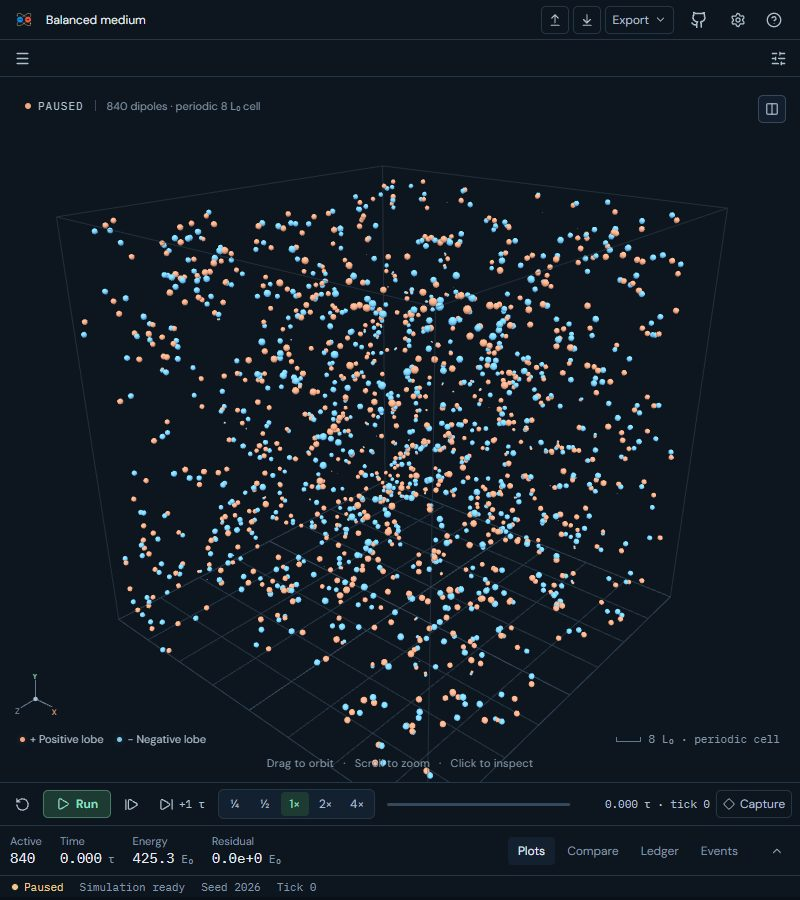
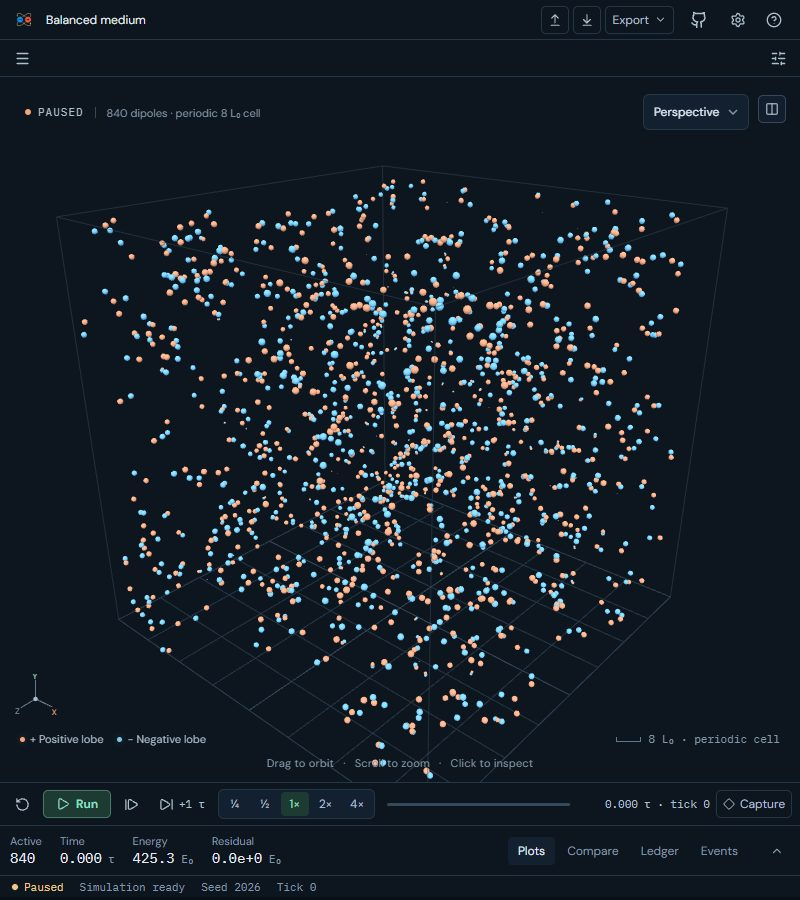
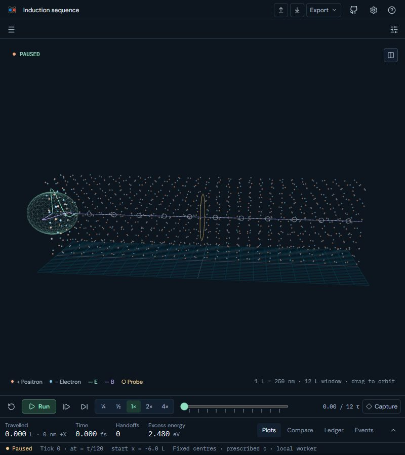
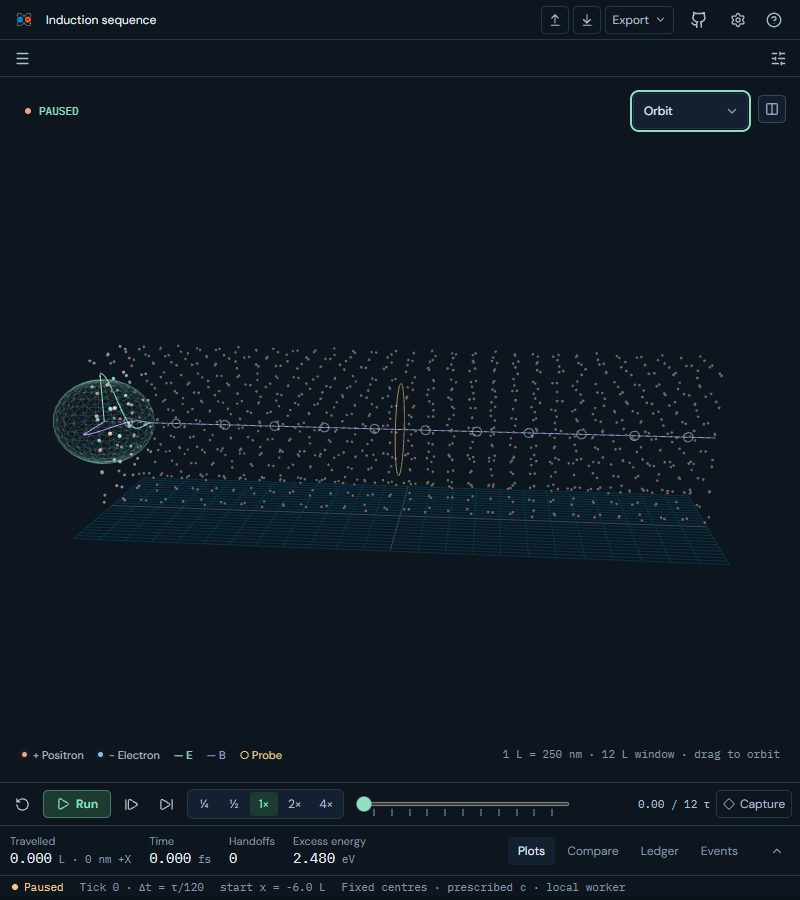
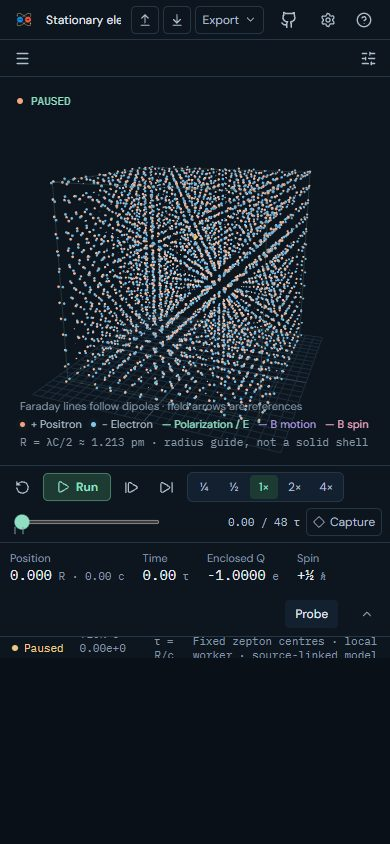
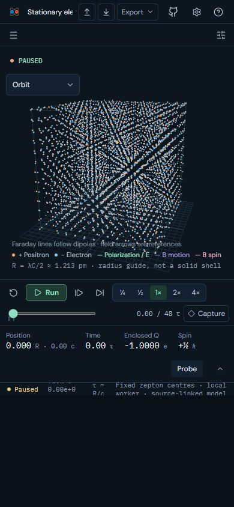
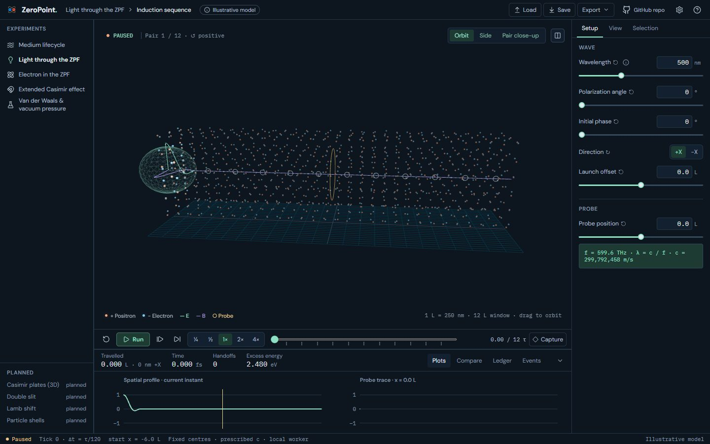

UI 19c: Camera presets on narrow screens: before and after
Below 851 px the camera presets used to disappear from Medium, Light and Electron. They now collapse into a compact Camera select in the viewport's top bar, at a 36 px touch height. Wider screens keep the segmented control unchanged.
Real screens: "before" runs the layer below, and "after" runs this layer. Click an image to open it at full size. Regenerate with node scripts/compare-screens.mjs --before ../19b-casimir-files --out docs/ui-previews/19c-narrow-camera --set camera --title 'UI 19c: Camera presets on narrow screens' --description 'Below 851 px the camera presets used to disappear from Medium, Light and Electron. They now collapse into a compact Camera select in the viewport'\''s top bar, at a 36 px touch height. Wider screens keep the segmented control unchanged.'.
Medium · 800 × 900: the camera presets as a compact select




Light · 800 × 900, select focused




Electron · phone 390 × 844




Light · 1440 × 900: wide screens keep the segmented control, unchanged


